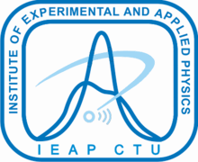

Seattle to Fairbanks on 25 April 2026 and back on 30 April, played back frame by frame. Neither flight has an ADS-B export yet, so there is no ground track and no altitude — the clock comes from the detector's own per-frame counter, anchored on the session headers. Everything else is finished, including the awkward part: the two legs do not agree.

| leg | t+ [min] | UTC | frames | flux [s⁻¹cm⁻²] | dose rate [µGy/h] |
|---|
build 2026-11-12 · 4e2ae12a